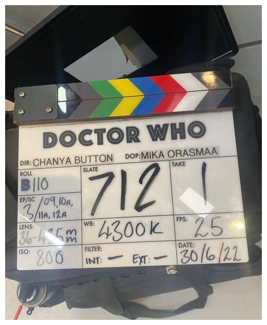
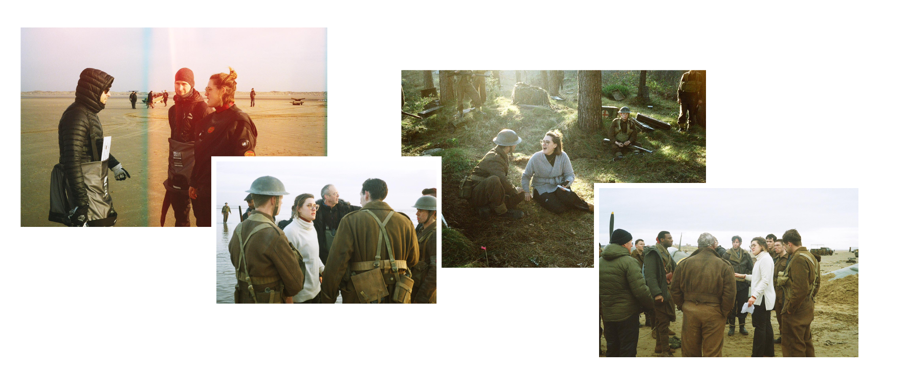
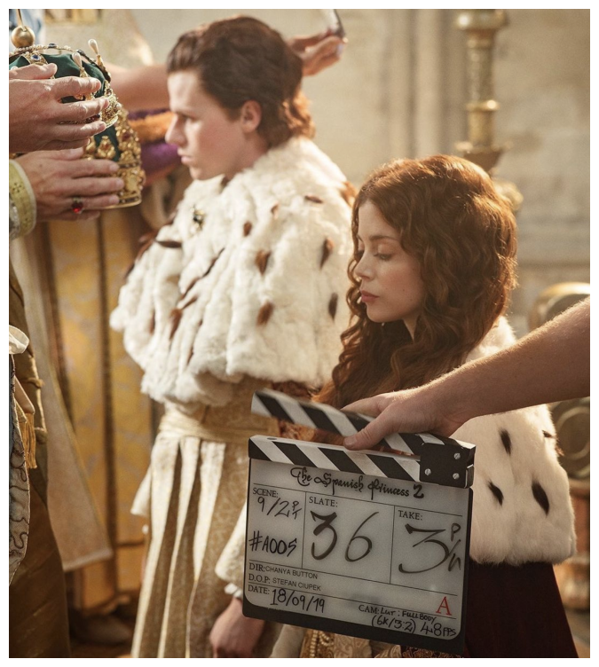
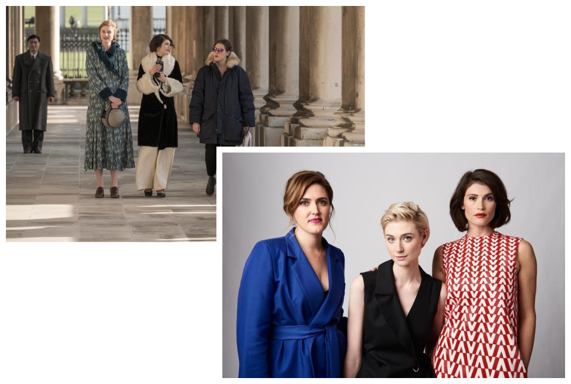
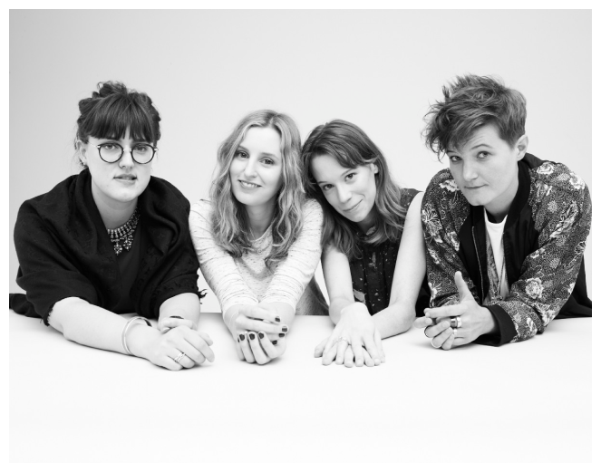

<!DOCTYPE html>
<html class="page-about" lang="en">

<head>
	<title>About</title>
	<meta charset="utf-8">
	<meta name="viewport" content="width=device-width,minimum-scale=1,initial-scale=1,shrink-to-fit=no">
	<link rel="shortcut icon" href="">
	<link rel="apple-touch-icon-precomposed" href="">
	<meta name="keywords" content="themeforest, theme, html, template">
	<meta name="description" content="themeforest, theme, html, template">
	<link rel="stylesheet" href="assets/css/style.css">
</head>

<body>
	<header class="cb-header">
		<a class="cb-logo" href="index.html">Chanya Button</a>
		<nav class="cb-nav">
			<a href="work.html">Work</a>
			<a href="about.html">About</a>
		</nav>
	</header>
	<div class="cb-about">
		<div class="cb-about__img cb-about__img-doctor">
			
		</div>
		<div class="cb-about__img cb-about__img-wof">
			
		</div>
		<div class="cb-about__img cb-about__img-spanish">
			
		</div>
		<div class="cb-about__img cb-about__img-vv">
			
		</div>
		<div class="cb-about__img cb-about__img-bbb">
			
		</div>
		<div class="cb-about__inner">
			<p>
				Chanya is a film, television and theatre director and writer. She is currently developing original series’ as Writer & Director with Priyanka Chopra’s Company Purple Pebble, and Nicola Shindler’s company Quay Street Productions. Chanya has most recently joined the <strong class="cb-about__trigger" data-img="doctor">Doctor Who</strong> 60th Anniversary Special as Director, working with Russell T Davies, Bad Wolf and the BBC. Her other recent directing work for TV includes the World War II drama <strong class="cb-about__trigger" data-img="wof">World on Fire</strong> with Lesley Manville, Helen Hunt, Sean Bean and Jonah Hauer King (BBC/Mammoth Screen/PBS), and <strong class="cb-about__trigger" data-img="spanish">The Spanish Princess</strong> (New Pictures/Amazon Prime/ STARZ) which Chanya joined as Lead Director.
			</p>
			<p>
				Her critically acclaimed second feature film <strong class="cb-about__trigger" data-img="vv">Vita & Virginia</strong> starring Gemma Arterton, Elizabeth Debicki and Isabella Rossellini, received its World Premiere at the Toronto International Film Festival in 2018. It then went on to be the Opening Night Gala Film for the BFI Flare Film Festival in 2019, and was nominated at the BIFA Awards in 2019. Chanya’s debut feature film Burn Burn Burn starring Chloe Pirrie and Laura Carmichael, was nominated for the Discovery Award at the BIFA Awards for an outstanding debut feature, in 2016. Burn Burn Burn premiered at BFI London Film Festival and was later
				acquired on by Netflix alongside receiving a global theatrical release.
			</p>
			<p>
				Chanya went onto win the BFI LOCO Film Festival’s Discover Award for <strong class="cb-about__trigger" data-img="bbb">Burn Burn Burn</strong>, as an outstanding debut feature in 2016. Burn Burn Burn received its US Premiere at the Seattle Film Festival. It won the Grand Prix at the Odessa Film Festival, and the Audience Award at the Umbria Film Festival. It was also in competition at the Toronto In/Out LGBTQ Festival and at Eden Norderney and Brussels Film Festivals. Chanya is an alumni of the Royal Court Young Writers Programme. She received an MA from RADA in Theatre Directing, and studied English Literature at Oxford University.
			</p>
			<div class="cb-representation">
				<div class="cb-representation__item">
					UK Representation:<br><br>

                Alec Drysdale & Olivia Gray<br>
                Independent Talent Group<br>
                40 Whitfield Street<br>
                W1T 2RH<br>
                0207 636 6565
				</div>
				<div class="cb-representation__item">
					US Representation: <br><br>

                Andrew Cannava & Jenny Maryasis<br>
                United Talent Agency<br>
                9336 Civic Center Drive<br>
                Beverly Hills, CA<br>
                (310) 273 6700
				</div>
			</div>
		</div>
	</div>
	<script src="https://ajax.googleapis.com/ajax/libs/jquery/3.6.0/jquery.min.js"></script>
	<script src="assets/js/remodal.js"></script>
	<script src="assets/js/script.js"></script>
</body>

</html>